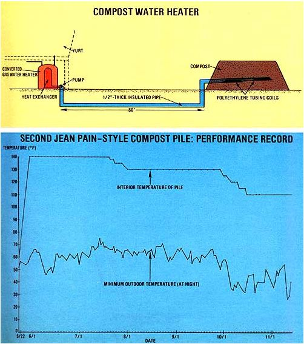

Diy Water Heating With Compost
Here's the latest update on our experiments to obtain usable heat from compost.
By the Mother Earth News Editors
July/August 1981
All systems are "go" with Mother’s latest innovation in the field of "bacteria-fueled" home energy: a decomposing compost heap that will produce hot water.
It's been a while-almost a year, in fact-since we last reported on the progress of Mother's ongoing experiments in obtaining usable heat from compost. (Our efforts, as most of you probably recall, were initially inspired by the pioneering work of the French organic gardener and biotechnologist, Jean Pain.) However, our recent silence on the subject doesn't mean that MOM's research staffers have been idle. On the contrary, they've been hard at work over the past months . . . measuring the heat-generating capacity of our second "Pain-style powerplant" (for details of that mound's design and construction, see "Update II: Mother’s Compost Heater"), as well as testing various other modifications on the design of M. Pain's original shredded-brush piles.
Mother’s second compost heap-as recorded on the performance chart which accompanies this article-surpassed its predecessor by registering an inner temperature of 140°F for two months . . . and then leveling off again at a plateau of 130°F, which it sustained for another two months before dropping any further. The success of that particular heatmaking cylinder convinced us that we could produce temperatures as high as those claimed by M. Pain for his experimental mounds. Later, when the next pile we built actually registered a high of 155°F for a good portion of its 4-1/2-month life span, we knew we were onto something that was potentially very important!
So, Larry Hollar-one of Mother’s horticulturists and our staff compost-heating expert-decided to undertake an even more ambitious project. In order to tap the heat produced in compost piles for home use, Larry decided to hook up our newest heap to a closed-loop circulation system . . . and provide hot water for one of the yurts at MOM's Eco-Village. His goal is to demonstrate that a decaying compost pile can indeed be a practical source of abundant energy for individuals.
SIMPLER CONSTRUCTION
In order to avoid the effort that was spent in building chicken-wire-and-bamboo enclosures to support the earlier piles (which were all cylindrical), Larry settled on a lower, rectangular-shaped heap with sloping sides. Such a configuration, he reasoned, would have the advantage of not requiring a wire-and-wood cage to hold it together . . . and could be constructed quite easily with common garden hand tools. (While preparing all his previous humus-heating experiments, Larry had needed to use a cumbersome tractor-mounted loader to shape the tall, cylindrical piles.)
To make the heat-producing mound, our intrepid composter first put down a base layer consisting of about two and one-half feet of "the recipe" mix of three parts wood chips to one part manure. Unlike the previous mounds we've erected, this one makes use of dehydrated cow manure . . . simply because the nearby dairy where we've obtained fresh droppings in the past now processes the material before passing it on to us. (MOM'S researcher suggests that a potential compost-heap builder use whatever form of manure is most readily available in his or her area . . . and then water the structure thoroughly-at one-foot intervals-as the layers are piled up.)
On top of this foundation, Larry placed two flat coils of one-inch black polyethylene tubing. (Each ring is composed of 100 feet of hose piled in four-foot-diameter loops.) The coils were then connected to separate lengths of half-inch tubing, which carry water into and out of the pile's interior. In addition, three thermocouples were attached to the assembly: One of the heat-sensing devices was placed inside each tubing coil, to measure the temperature of both the incoming and outgoing water . . . while the third heat detector was positioned between the coils, to record the interior temperature of the compost pile itself.
Finally, another full layer of the woodchip/manure mixture was placed on top of the tubing coils . . . and a sheet of black plastic was fitted over the whole structure, to trap moisture and increase heat absorption. The entire construction process-which took Larry just over 12 hours to complete single-handed-produced a neat compost stack measuring approximately 5 feet high, 10 feet wide, and 12 feet long. The compact mound, although smaller than the previous ones we've built (and much less massive than the 50- to 100-ton heaps made by Jean Pain), still weighs a solid six tons.
DIY WATER HEATING
The circulation system that connects MOM's compost-fed "heat generator" to the yurt's water supply is a simple closed-loop arrangement. Approximately 80 feet of half-inch-thick tubing-wrapped in homemade polyurethane-foam pipe insulation-emerges from the pile's interior and travels underground to a water tank located beneath the main floor of the house. (To remodel the receptacle for its new "bacteria-powered" function, Mother's research staff completely gutted a used, 40-gallon gas water heater and refitted it with an inner heat exchanger.) Water from a nearby spring is gravity-fed into the tank, where it circulates around a center column full of the hot liquid that's pumped in from the compost pile. Thus, the running water that emerges from the yurt's tap is always fresh-and warm! -while that circulating between the pile and the water tank is simply used over and over.
KEEPING AN EYE ON THE COMPOST PILE
Now that we've got the system all hooked up, we plan to watch our water-heating compost pile closely throughout the summer and fall . . . until the decomposing heap begins to "die out" and its heat-producing capacity wanes. We hope this new design will provide evidence that a simple pile of wood chips and manure, connected to a closed-loop plumbing circuit, can heat enough water for the average household's use . . . so watch forthcoming issues of Mother for follow-up details on just how the "new" system is working out.
HERE'S ANOTHER "HOT" ITEM
Bill Mayes is well known in the small mountain community of Brevard, North Carolina . . . not only for his fine flock of sheep (a few of which have joined the expanding livestock herd at MOM's Eco-Village), but also for the unusual way he waters those animals.
Bill recently learned that a sheep raiser can actually reduce feed expenditures by giving preheated water to lactating ewes, so that the animals use up less body energy (and thus require less food) to warm the water they drink for conversion into milk. So-as an inexpensive method of heating his flock's drinking water-the Tar Heel farmer built a low, oval compost pile modeled after the prototypes described in Mother’s series of articles on the Jean Pain technique. Deep within a straw-bedding-and-sheep-manure mound, Bill buried a 500-gallon water tank and next to that -a coil made from 75 feet of one-inch tubing . . . which is, in turn, joined to an outside valve that empties into the sheep's water tub.
The supply source for this setup is actually the gutter on the barn roof, which feeds rainwater directly into the holding tank inside the decomposing heap. Even though Mr. Mayes has no way of measuring the interior temperature of his four-foot-tall compost pile (which is supported by a wire enclosure similar to the ones we used for Mother’s first and second mounds), he does know that the water emerging from the heap usually registers about 108°F . . . a temperature which seems to please the sheep, and which saves them from using body energy to warm the liquid produced in their mammary glands.
Mr. Mayes, who operates a boys' camp each summer, says he's been quite pleased with the performance of his "barnyard burner" and plans to use the compost mound as a demonstration project for his campers this season.
 Simple DIY Water Heating with Compost. [1] MOTHER's newest compost mound shown here partially completed Is a low, rectangular heap with sloping sides (a shape that eliminates the need for a cage) and two flat coils of polyethylene tubing buried inside it. [2] The rings are connected to insulated hoses which will carry water in and out of the pile. [3] The warmed water travels 80 feet (see the diagram at left) and then is circulated through a heat exchanger inside this converted water heater. [4] MOM's second Jean Pain-style compost heater will be a hard act to follow! Supported by a wire frame and sheathed in black plastic, the circular mound maintained for almost teal months its highest temperature of 140?F, as registered on . . . [5] this thermometer. |
 Results from tracking the performance of the compost water heater. |
|